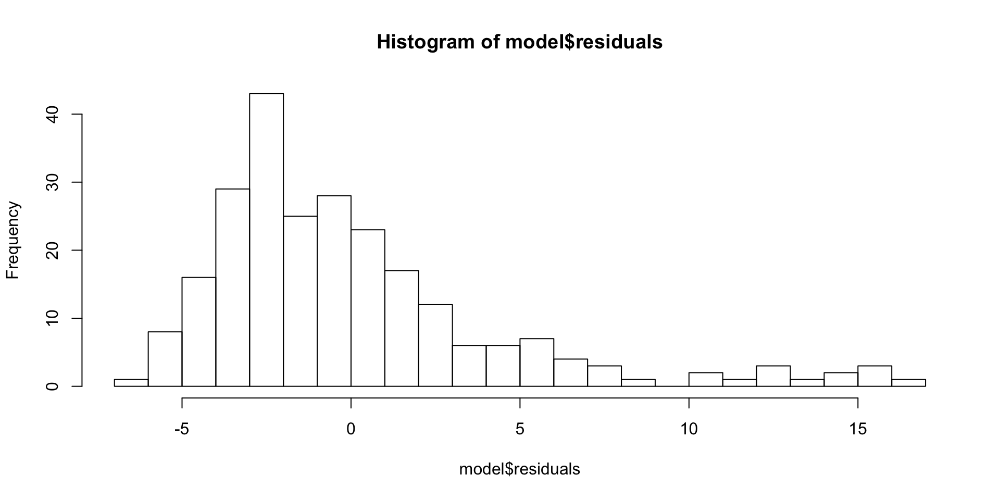

Outlier
Download the script here. There are no exercises so this script contains all necessary code already.
Download the data here (same data as on the DataViz Eurostat page)
1 Tl;dr
This is how standard OLS regressions are done:
ols_object <- lm(regressand ~ regressor1 + regressor2 + regressor3,
data = data.frame)This is how a (two-ways FE) panel regression is done
library(plm)
panel_object <-
plm(
regressand ~ regressor1 + regressor2 + regressor3,
index = c("unit", "time"),
model = "within",
effect = "twoways",
# for two-ways fixed effect regressions
data = data.frame
)This is how you can get a summary of your regression:
summary(ols_object, panel_object)This is a nicer way for getting a summary and exporting (journal style)
library(stargazer)
stargazer(ols_object, panel_object,
type = "html", # either html, latex, or text
out = "output.html") # if a file should be produced2 Introduction
2.1 Workflow
## Warning in as.POSIXlt.POSIXct(Sys.time()): unknown timezone 'zone/tz/2019c.
## 1.0/zoneinfo/Europe/Berlin'2.2 The lm Function
lm(formula,
data,
subset,
na.action)formula - Specification of our regression model
data - The dataset containing the variables of the regression
subset - An option to subset the data
na.action - Option that specifies how to deal with missing values
2.3 The formula Argument
We can write our models using the following syntax:
model <- formula(regressand ~ regressors)Where regressand is just our dependent variable / response usually denoted by \(y\) and model is our formula of independent variables / regressors, e.g.:
kicker_success_formula <- formula(kicker_success ~ experience + training + luck)We can construct formulas with the following syntax:
- Adding variables with
+
formula(y ~ a + b)- Interactions with
:
formula(y ~ a + b + a:b)- Crossing:
a * bis equivalent toa + b + a:b
formula(y ~ a + b + a:b) # and
formula(y ~ a * b) # are equivalent- Transformations with
I()
formula(y ~ a + I(a ^ 2)) # quadratic term must be in I() to evaluate correctly
formula(y ~ log(a)) # log can stay by itself- Include all variables in your data with
.
formula(y ~ .) # is equivalent to
formula(y ~ a + b + ... + z) # for a dataset with variables from a to z2.4 The subset Argument
- Sometimes, we want to run our model on a subset of our data (without changing the data themselves)
- We can specify subsets of certain variables as follows:
lm(formula,
data,
subset = age < 30)- Connect multiple subset arguments with logical operators:
lm(formula,
data,
subset = age < 30 & height > 180)Note that although this works, a best practice is to subset your data prior to the estimation. By keeping these steps distinct, your code will be much easier for someone else to understand.
2.5 The na.action Argument
If the data contains missing values, lm automatically deletes the whole observation.
- Specify
na.action = na.failif you want an error when the data contains missing values
Again, it is a best practice to look for missing values in your data prior to the estimation to keep your code transparent.
- You can use the
missmapfunction from theAmeliapackage to get a nice visualisation of missing values in your data
2.6 Example Call of lm with Eurostat Data
eur_data <- read.csv2("data/eurostat_data.csv")
m1 <-
formula(unemp_workagepop_t ~ gdp_gr + inv_per_empl + immigration_t,
subset = year == 2014)
model <- lm(formula = m1,
data = eur_data)2.7 Output of lm
The lm function returns a list. Relevant components of this list are:
call- the function call that generated the outputcoefficientsthe OLS coefficientsresidualsfitted.valuesThe estimates for our dependent variable (unemployment)modelThe model matrix used for estimation
The full list of outputs can be looked up via
?lm()str(model)where model is our saved output fromlm- the
$operator andtab, e.g.model$...
Lets look up our coefficients \(\beta\), fitted values \(\hat{y}\) and OLS residuals \(\varepsilon\)
model$coefficients## (Intercept) gdp_gr inv_per_empl immigration_t
## 1.284087e+01 -1.636299e-01 -3.228256e-01 -2.266933e-06model$fitted.values[1:7] # first 7 fitted values## 14 15 16 17 18 19 20
## 7.844069 9.367108 8.414682 8.144617 8.612589 8.671478 8.847128model$residuals[1:7] # first 7 residuals## 14 15 16 17 18 19 20
## -3.644069 -3.967108 -3.514682 -3.544617 -3.712589 -3.271478 -3.147128We can visualise the results very simply with hist or plot:
hist(model$residuals, breaks = 30)
hist(model$fitted.values, breaks = 30)
2.8 Output of lm with the summary() function
summary(model)##
## Call:
## lm(formula = m1, data = eur_data)
##
## Residuals:
## Min 1Q Median 3Q Max
## -6.446 -2.790 -1.099 1.529 16.458
##
## Coefficients:
## Estimate Std. Error t value Pr(>|t|)
## (Intercept) 1.284e+01 5.628e-01 22.815 < 2e-16 ***
## gdp_gr -1.636e-01 7.869e-02 -2.080 0.0386 *
## inv_per_empl -3.228e-01 5.039e-02 -6.406 7.91e-10 ***
## immigration_t -2.267e-06 1.438e-06 -1.576 0.1164
## ---
## Signif. codes: 0 '***' 0.001 '**' 0.01 '*' 0.05 '.' 0.1 ' ' 1
##
## Residual standard error: 4.386 on 238 degrees of freedom
## (671 observations deleted due to missingness)
## Multiple R-squared: 0.1887, Adjusted R-squared: 0.1785
## F-statistic: 18.46 on 3 and 238 DF, p-value: 8.453e-112.9 Display and Export Tables with stargazer()
stargazer::stargazer(model, type = "text")##
## ===============================================
## Dependent variable:
## ---------------------------
## unemp_workagepop_t
## -----------------------------------------------
## gdp_gr -0.164**
## (0.079)
##
## inv_per_empl -0.323***
## (0.050)
##
## immigration_t -0.00000
## (0.00000)
##
## Constant 12.841***
## (0.563)
##
## -----------------------------------------------
## Observations 242
## R2 0.189
## Adjusted R2 0.179
## Residual Std. Error 4.386 (df = 238)
## F Statistic 18.457*** (df = 3; 238)
## ===============================================
## Note: *p<0.1; **p<0.05; ***p<0.01Jake Russ has the ultimate overview over all stargazer() functions (there are many!!).
2.9.1 Export Stargazer Output to File
stargazer::stargazer(model,
type = "html",
out = "model.html")2.10 Compare different Models
model2 <- lm(unemp_workagepop_t ~ gdp_gr,
data = eur_data)stargazer::stargazer(model, model2,
type = "html")| Dependent variable: | ||
| unemp_workagepop_t | ||
| (1) | (2) | |
| gdp_gr | -0.164** | -0.343*** |
| (0.079) | (0.065) | |
| inv_per_empl | -0.323*** | |
| (0.050) | ||
| immigration_t | -0.00000 | |
| (0.00000) | ||
| Constant | 12.841*** | 9.152*** |
| (0.563) | (0.258) | |
| Observations | 242 | 360 |
| R2 | 0.189 | 0.071 |
| Adjusted R2 | 0.179 | 0.069 |
| Residual Std. Error | 4.386 (df = 238) | 4.423 (df = 358) |
| F Statistic | 18.457*** (df = 3; 238) | 27.447*** (df = 1; 358) |
| Note: | p<0.1; p<0.05; p<0.01 | |
Specify the folder and file were your table should be saved as "path/name.type"
- Output as
.html: Open the file in your web browser and copy it into Word - Output as
.tex: Include in LaTeX
3 Panel Regression
Just a very quick glimpse into panel regressions with plm.
library(plm)
panel_object <- plm(
unemp_workagepop_t ~ gdp_gr,
data = eur_data,
index = c("geo_code", "time"),
model = "within",
effect = "twoways"
) # for two-ways fixed effect regressionsFor further information on panel regressions, I recommend
- the slides by Oscar Torres-Reyna
- the Chapter 13 from the Econometrics with R book